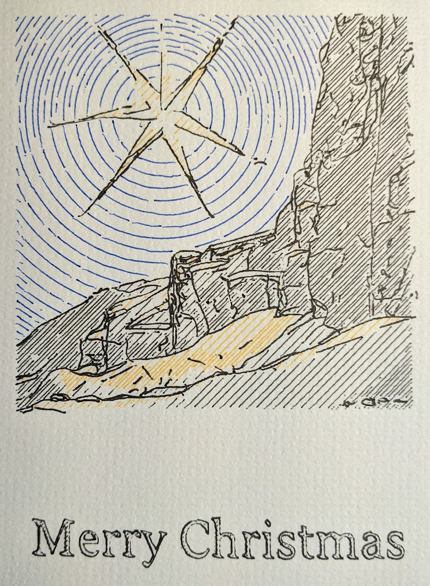

This year I decided (at the very last moment) to put together a pen-plotter-based Christmas
card to send out to friends and family. This page is about the process used to create the
front of the card; even if you're not interested in the technical details you can scroll
through and get a general sense of how I put it together.
Also, you can navigate through the sections with the arrow keys.
Also also, if you didn't get one or received yours somewhat after Christmas I apologize - each card took quite a lot of machine time to make and I had fewer than I would've liked.
Prev Next
1 / 9
Image Generation
The image depicted on the card was generated by the text-to-image deep learning model Stable Diffusion (v1.5). I prompted the model for images of "Christmas stars" in an ink illustrated style.
In hindsight it was difficult to extract the "inked" lines from this image, and it probably would've been easier to try to generate an unstylized image and allow the style to arise from the plotting process.
Anyways.
Outline Vectorization
I wanted to emphasize the lines in the image by converting them to vectors which the pen plotter could draw directly, rather than using a shading technique intended for plotting photographs. There are lots of existing tools in this area but they weren't well suited to this image, either performing poorly in terms of accuracy or producing geometry too complex to be drawn.
To isolate the pixels which were part of "ink" lines, I applied a Gaussian blur to the image and took pixels which became significantly lighter. As you can see this also picks up some pixels which are merely part of a dark region adjacent to a lighter one, but I was more interested in cleanliness than accuracy.
The low resolution of the source image (512x512) and consequent fine- and disjointedness of the its lines made it difficult to apply the existing line vectorization algorithms I tried (e.g. Sparse Pixel Vectorization).
I ended up implementing a simple greedy tracing method which performed okay on this image. It creates a path starting at a random pixel from the previous step and looks for nearby pixels which maximize the proportion of the vector between the current and candidate next pixel which is in the direction of the vector between the previous and current pixel, divided by the distance to the next pixel (so, dot(bc, ab) / dot(bc, bc)).
This strategy could be made a bit less greedy by searching more than one pixel ahead or by applying some optimization to the traced paths, but it was good enough as-is.
To smooth out the jagged lines created from the integer pixel coordinates I applied scipy's UnivariateSpline interpolation to each axis of each of the paths. The result is the final SVG which will be plotted onto the card.
Shading and Color
I found the plotted outline alone to be busy and difficult to parse, so I added shading in three segments to bring color to the card and break up the image into distinct parts.
Here's the original image again for reference.
First the image was quantized into four colors with OpenCV's k-means clustering function. I then used each color to mask off a segment of the image to be shaded with a pen of a different color.
The dark "outline" segment was discarded, and the blue parts of the foreground manually combined with the grey to give a single "ground" segment.
I also masked the segments near the outline vectors to help prevent overlap due to imprecise plotting.
Finally, the raster segments were vectorized with the hatched package
The concentric circular hatching offered by that tool reminded me of the star trails created by long exposure night photography, so I chose to use that for the sky.
Plotting It All Together (Ahaha.)
That's it! Here's the combined SVG plotted to the card. I removed the stars/snowflakes (I don't think the model could decide what they were) from the outline layer as they were too small to plot effectively and just added confusion to the sky.
This SVG was combined with the "Merry Christmas" text in Inkscape and converted to gcode with the vpype-gcode plugin for vpype.
I then went in and manually broke the gcode up by color into four files for more flexibility when plotting.
Tremendous thanks to my mom for hand-writing the message on the reverse side of the cards, for providing everyone's address, and for actually posting all of these cards.
From the LaRocques, Merry Christmas.
